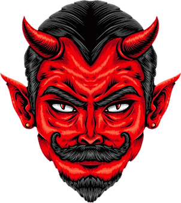

XITERKING
Reglas y condiciones
Todo lo que tenés que saber antes de jugar, comprar o inscribirte.
Reglamento de torneos
Última actualización: 5 de noviembre de 2026
Al inscribirte a un torneo de XITERKING aceptás este reglamento. Cada torneo puede tener reglas propias (nivel mínimo, mapa, formato, etc.): están publicadas en su tarjeta y en el formulario de inscripción, y se suman a estas reglas generales.
1. Quién puede jugar
- Necesitás una cuenta en el sitio y una cuenta real de Free Fire.
- Cada ID de jugador puede inscribirse una sola vez por torneo.
- Los nombres y los IDs tienen que ser correctos. En dúo y escuadra, quien inscribe al equipo es responsable de cargar bien los datos de todos.
2. Inscripción, cupos y lista de espera
- Las inscripciones cierran con la anticipación indicada en cada torneo. Pasado el cierre no se aceptan nuevos equipos.
- En las inscripciones pagas tenés que subir una foto del comprobante del pago.
- Los cupos son limitados. Si se agotan, podés anotarte en la lista de espera y te avisamos si se libera un lugar.
- En torneos con inscripción paga, revisamos el pago a mano. Tu lugar queda confirmado cuando aprobamos el pago, no antes.
3. Mínimo de equipos
Si un torneo tiene mínimo de equipos y no se llega al cerrar las inscripciones, el torneo se cancela y se devuelve el 100% de lo pagado (ver reembolsos).
4. Check-in obligatorio
- Tenés que confirmar que vas a jugar desde la tarjeta del torneo o desde Mis torneos.
- El check-in se abre 1 hora antes del inicio y cierra 30 minutos antes.
- Si no hacés el check-in, perdés tu lugar y no se devuelve la inscripción.
5. Faltas
Si te anotás y no te presentás, la organización puede marcarte una falta. Con 2 faltas en los últimos 30 días solo podés anotarte a torneos con inscripción paga, hasta que pase ese plazo.
6. Juego limpio
- Está prohibido usar hacks, programas externos o cualquier ventaja injusta, y aprovechar bugs a propósito.
- Está prohibido jugar con la cuenta de otra persona o inscribir cuentas falsas.
- Se espera respeto hacia los demás jugadores y hacia la organización.
- Quien incumpla estas reglas puede ser descalificado sin devolución y bloqueado de futuros torneos.
7. Resultados y kills
- La organización carga las kills de cada equipo y el sistema calcula el ranking. Más kills = mejor puesto; si hay empate, los equipos comparten el puesto.
- Para verificar las kills, subí una captura de la pantalla final de cada partida desde Mis torneos (PNG, JPG o WEBP, hasta 5 MB). Sin captura, la organización puede no validar tus kills.
- Si ves un error en los resultados, escribinos por soporte apenas se publiquen.
- Las decisiones de la organización sobre resultados y sanciones son finales.
8. Premios
- Los premios son los publicados en cada torneo: fijos, un pozo armado con un porcentaje de las inscripciones confirmadas, o un pago por cada kill.
- El pozo se calcula sobre las inscripciones confirmadas al momento de finalizar el torneo.
- Los premios se pagan después de finalizado el torneo y verificados los resultados, a la cuenta que indicaste (Binance Pay o Mercado Pago). Revisá bien ese dato al inscribirte: no podemos pagar a otra cuenta.
9. Cambios y cancelaciones
La organización puede cambiar el horario o cancelar un torneo por razones técnicas o de fuerza mayor. Te avisamos por el sitio y, si el torneo se cancela, devolvemos las inscripciones pagas.
Términos y condiciones
Última actualización: 5 de noviembre de 2026
Al crear una cuenta o usar el sitio aceptás estos términos. Si no estás de acuerdo, no uses el servicio.
1. Quiénes somos
XITERKING es una tienda independiente. No estamos afiliados, patrocinados ni avalados por Garena ni por Free Fire. Todas las marcas y nombres pertenecen a sus dueños. Ofrecemos recargas de diamantes de Free Fire LATAM y organizamos torneos.
2. Tu cuenta
- Para registrarte necesitás un email válido, que confirmás con un código que te enviamos.
- Tenés que ser mayor de edad o contar con la autorización de tu madre, padre o tutor.
- Tus datos tienen que ser verdaderos. Cada persona puede tener una sola cuenta.
- Cuidá tu contraseña: lo que se haga desde tu cuenta es responsabilidad tuya.
3. Saldo y recargas de diamantes
- Los precios están en USDT. Para comprar diamantes primero cargás saldo en tu cuenta.
- Cargás saldo pagando por Binance Pay y subiendo una foto del comprobante (captura de la operación). Revisamos el pago y acreditamos el monto que efectivamente recibimos. Cada comprobante se puede usar una sola vez.
- El saldo se usa solo para comprar diamantes en este sitio. No genera intereses ni se puede transferir a otra cuenta.
- El precio que ves al confirmar la compra es el que se cobra. Los precios pueden cambiar para compras futuras.
- Las recargas se entregan de forma automática a través de nuestro proveedor. Algunas demoran más y las ves como "En proceso".
- Vos sos responsable de escribir bien tu UID de Free Fire. Cuando el juego lo permite, te mostramos el nombre del jugador antes de confirmar.
4. Torneos
Los torneos se rigen por el Reglamento de torneos. Las inscripciones pagas se abonan por Mercado Pago o Binance Pay según indique cada torneo, no con el saldo de diamantes.
5. Disponibilidad del servicio
Podemos pausar las recargas o la carga de saldo de forma temporal por mantenimiento, falta de stock o problemas del proveedor. No somos responsables por caídas o cambios de Free Fire, de Garena, de nuestros proveedores o de los medios de pago.
6. Conductas no permitidas
- Usar comprobantes falsos, repetidos o de pagos que no son tuyos.
- Usar medios de pago robados o ajenos, o pedir contracargos de pagos ya acreditados.
- Abusar de errores del sitio, automatizar compras o crear cuentas múltiples.
Ante estas conductas podemos suspender o cerrar tu cuenta y cancelar pedidos o inscripciones. En caso de fraude comprobado, no se devuelven los montos involucrados.
7. Tus datos
Guardamos tu nombre, email, IDs de jugador, el teléfono que nos das al inscribirte a un torneo (solo para enviarte el comprobante de un premio), historial de pedidos, pagos e inscripciones, y las capturas y fotos de comprobantes que subís, únicamente para operar el servicio. No vendemos tus datos. Los compartimos solo con los proveedores necesarios para funcionar (infraestructura, proveedor de recargas y medios de pago). Podés pedir ver, corregir o eliminar tus datos escribiendo a soporte.
8. Responsabilidad
No controlamos las decisiones de Garena sobre tu cuenta de Free Fire. Nuestra responsabilidad por un pedido o una inscripción se limita al monto que pagaste por ese pedido o inscripción.
9. Cambios en estos términos
Podemos actualizar estos términos. Publicamos siempre la versión vigente acá, con su fecha. Si seguís usando el sitio después de un cambio, lo aceptás.
10. Ley aplicable y contacto
Estos términos se rigen por las leyes de la República Argentina, y como consumidor mantenés los derechos que te da la Ley 24.240 de Defensa del Consumidor. Para cualquier consulta escribinos por WhatsApp.
Política de reembolsos
Última actualización: 5 de noviembre de 2026
En resumen
- Si una recarga no se puede entregar, el saldo vuelve solo a tu cuenta.
- Una recarga ya entregada no se reembolsa (es un producto digital de entrega inmediata).
- Si un torneo se cancela, te devolvemos la inscripción completa.
- Para pedir cualquier reembolso, escribinos por soporte con tu email y el comprobante o ID de pedido.
1. Recargas de diamantes
- Pedido no entregado o rechazado: el saldo se devuelve automáticamente a tu cuenta. Lo ves en tu historial como "Rechazado · saldo devuelto".
- Pedido entregado: no es reembolsable. Si hubo un error nuestro (diamantes distintos al paquete que elegiste o una recarga duplicada), escribinos y lo corregimos o te devolvemos el saldo.
- UID equivocado: si escribiste mal tu UID y la recarga se entregó en otra cuenta, no podemos revertirla ni reembolsarla. Revisalo antes de confirmar.
- Pedido "En proceso": demorar un poco no da lugar a reembolso; se resuelve solo. Si pasa mucho tiempo, escribinos.
2. Carga de saldo
- Si rechazamos una carga (comprobante inválido o pago no recibido), no se acredita nada. Si enviaste dinero por error, escribinos con el comprobante.
- Saldo sin usar: podés pedir la devolución dentro de los 10 días corridos de acreditada la carga. La hacemos por el mismo medio de pago, descontando las comisiones de red si las hubiera. Pasado ese plazo, el saldo queda disponible para comprar diamantes pero no se devuelve en dinero.
- El saldo ya usado en pedidos entregados no se devuelve.
3. Torneos
- Torneo cancelado por la organización (incluye no llegar al mínimo de equipos): devolvemos el 100% de la inscripción.
- Cambio de fecha u horario: si no podés jugar con el nuevo horario, podés pedir la devolución desde Mis torneos (botón «Pedir devolución»), siempre que te hayas anotado antes del cambio y el torneo no haya empezado.
- Si cancelás vos antes del cierre de inscripciones: te devolvemos la inscripción completa. Si ya pagaste, escribinos por soporte para gestionarlo.
- Después del cierre, sin check-in, sin presentarte o si sos descalificado: no hay devolución.
- Inscripción rechazada (pago que no pudimos verificar): si el dinero llegó, lo devolvemos.
4. Cómo pedir un reembolso
Escribinos por WhatsApp con el email de tu cuenta, el ID del pedido o el comprobante del pago, y el motivo. Respondemos y, si corresponde, hacemos la devolución en hasta 7 días hábiles. Las devoluciones de pagos se hacen por el mismo medio en que pagaste (Binance Pay o Mercado Pago); los pedidos fallidos vuelven directo a tu saldo.